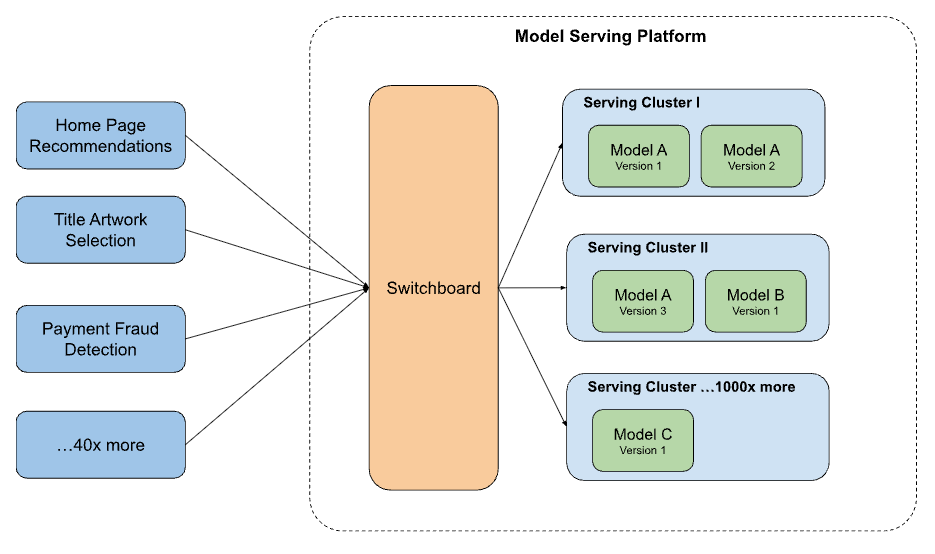
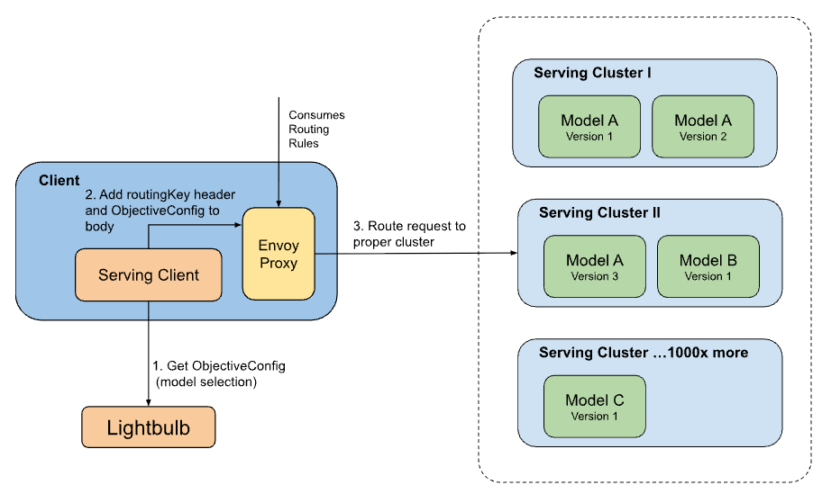

Routing ML Inference Trafficat Internet Scale
Rajat Shah
Staff Software Engineer, AI Platform · Netflix · Ex-Amazon
M.S. Computer Science · NC State University
←→ to navigate

Every time you open Netflix…
…a Machine Learning model decides what you see.
This talk is about the infrastructure that makes that possible — at scale.
That's not just for you.
Netflix has hundreds of millions of members — and they're all opening the app right now.
1,000,000
ML inference requests per second
Hundreds of model types. Every request must reach
the right model, on the right cluster, every single time.
the right model, on the right cluster, every single time.
Roadmap
Agenda
-
1The Routing ProblemWhy routing ML traffic is harder than it looks
-
2REST vs gRPCProtocol choice shapes the whole architecture
-
3API Gateway vs Service MeshTwo patterns for routing at scale — and the trade-offs between them
The Routing Problem
Why routing ML inference traffic is harder than it looks
The Routing Problem
ML Powers Your Netflix Experience
- 🎬Continue Watching — ranks your unfinished shows by likelihood to return
- 🔍Search results — personalized ranking beyond text match
- 🏠Homepage rows — which rows to show, and in what order
- 💳Fraud detection — real-time risk scoring on every payment
Every interaction. A model. A routing decision.

The Routing Problem
How a Netflix Request Travels (illustrative)
A single request can cross many services before a response is returned — simplified for illustration
The Routing Problem
Netflix is a Microservices System
- 🏗️1000s of independent services — each owns one job
- 🔗Services talk to each other over the network, dozens of times per request
- 🤖Several services call one or more ML models to make personalized decisions
- 📡Each ML call must reach the right model, on the right cluster — reliably, at low latency
The routing problem isn't one service's concern — it's every service's concern.
The Routing Problem
Why Routing ML Traffic Is Hard
- 🧠ML models are massive — each needs its own dedicated compute cluster
- 🗄️1000s of clusters, each with its own VIP address (a stable load-balancer IP)
- 🔀Multiple model versions run simultaneously — different users may be on different ones
- ⚡Topology keeps changing — new models, clusters, and versions ship constantly
- ⚠️Any routing error = wrong result or no result
How does a request find the right model — every time, at 1M req/sec?
The Routing Problem
The Naive Solution
❌ Hardcode the address
// Hardcoded destination client.call( "ml-cluster-7.internal:8080", request )
Models move between clusters.
Addresses change. Every client breaks.
Coordinating 30+ services is impossible.
Addresses change. Every client breaks.
Coordinating 30+ services is impossible.
vs
✅ Name the use case
// Name what you want client.call( "ContinueWatchingRanking", request )
A central config maps each name to the right cluster.
Clients never know which cluster.
Models can move freely.
Clients never know which cluster.
Models can move freely.
The Routing Problem ✓
REST vs gRPC
Protocol choice shapes the whole architecture
REST vs gRPC
Two Ways Services Talk to Each Other
Services need to call ML models over the network — the protocol they choose shapes the entire routing architecture.
REST / HTTP
Client ↔ Server (browsers, mobile apps)
- ✉️ Text-based, human-readable JSON
- 🌐 Works everywhere — browsers, CLIs, apps
- 🔍 Easy to inspect and debug
- 🐢 Verbose at high volume (JSON overhead)
// Request body { "user_id": "u_abc123", "surface": "home_page" }
vs
gRPC / HTTP/2
Service ↔ Service (fast internal calls)
RPC = Remote Procedure Call — call a function on another machine as if it were local.
gRPC — Google's open-source RPC framework, built on HTTP/2.
gRPC — Google's open-source RPC framework, built on HTTP/2.
- ⚡ Binary, compact — smaller payloads
- 🔒 Strongly typed schema (.proto)
- 🌊 Streaming — results as they compute
- 🚀 HTTP/2 — multiplexed, low overhead
// .proto contract message RankRequest { string user_id = 1; string surface = 2; }
REST vs gRPC
Why ML Serving Uses gRPC
- 📦ML payloads are large and structured — binary encoding matters
- 🔒Typed schema catches integration bugs before production
- 🌊Streaming — return ranked results as they compute
- ⚡HTTP/2 — multiple requests over one connection
→ grpc.io
Same data — two encodings
// REST / JSON (text, 68 bytes) { "user_id": "u_abc123", "surface": "home_page", "title_ids": ["t01","t02"] }
// gRPC / Protobuf (binary, ~18 bytes) message RankRequest { string user_id = 1; // u_abc123 string surface = 2; // home_page repeated string title_ids = 3; }
The Constraint
Most API Gateways are built for REST.
ML serving needed gRPC.
That gap forced us to think harder.
ML serving needed gRPC.
That gap forced us to think harder.
The protocol choice shaped the entire routing architecture.
REST vs gRPC ✓
API Gateway vs Service Mesh
Two patterns for routing at scale — and the trade-offs between them
Pattern 1 — The Operator
What Is an API Gateway?
A single entry point. All clients talk to it.
It routes requests to the right backend service.
Examples:
AWS API Gateway
Kong
NGINX
Custom-built
Pattern 1 — Applied
All ML Traffic Through One Gateway
- 🎯Client sends the use case name — gateway resolves model + compute cluster
- 🔗One integration point for all 30+ client services
- 🔀Context-aware routing: device, country, user segment, experiment

Pattern 1 — Capabilities
What the Gateway Unlocked
- 🎯Context-aware routing — device, country, user segment
- 🔀Traffic splitting — validate a new model on 5% of real traffic before full rollout
- ⏪Instant rollback — flip traffic back in seconds
- 📊Central observability — one place to see all ML traffic
- 🔗30+ client services integrated with zero per-client routing logic
The Problems
The API Gateway worked great.
Until traffic really scaled.
Until traffic really scaled.
A single central proxy handling every ML request — at 1M req/sec — revealed three hard problems.
🔴 Single point of failure
🐢 Added latency
🏘️ Tenant isolation
The Problems
1
Single Point of Failure
- 🔴Gateway goes down → every ML-powered experience degrades
- 😈One noisy client can jam the line for everyone
- 🛟No gateway = no ML calls — services must handle degraded responses gracefully
The wire runs through the board. Board goes down — every call drops.
The Problems
2
10–20ms You Can't Afford
Client
serialize
⟶
Gateway
re-serialize
⟶
Model
+10–20ms
per request
- 📈At tail latency (p99 — the slowest 1% of requests, the ones real users actually hit): much, much worse
- 📺For video start time or search: unacceptable
The operator has to repeat your entire message word-for-word before connecting you.
The Problems
3
One Gateway, Many Tenants
- 🏢All services share the same gateway cluster
- 🐌A slow, bursty use case slows everyone down — shared thread pools and queues mean one tenant's traffic jams the others
- 🔍Hard to isolate test traffic from real user traffic
- 💥One bad client can cascade errors back to everyone
One operator, whole city. A prankster ties up the line for real callers.
The Rethink
Routing metadata and request payload
are two different problems.
Where to go?
Which cluster? Which model version?
Lightweight — resolved from a use-case name alone, no request data needed.
→
What to send?
The actual request data.
Sent directly to the model cluster — Envoy reads only the header to route it, never the payload.
Stop solving them in one place.

Pattern 2 — Directory Assistance
What Is a Service Mesh?
Instead of one central gateway — every service gets a small local proxy: a "sidecar".
- 🔀Sidecar handles routing, retries, observability — without the app knowing
- 🧩Decentralized — no single shared choke point
Istio
Linkerd
Envoy ← our choice
Pattern 2 — The Sidecar
Envoy
Open-source, high-performance proxy — the sidecar of choice.
- 📋Reads request headers and routes to the right destination
- ⚡Configured dynamically — routing rules pushed without restarts
- 🌐Already handles all service-to-service traffic at Netflix
- 📊Built-in metrics, tracing, and observability
Pattern 2 — Applied
The Sidecar Pattern for ML
Step 1 — Client asks the sidecar: "where should I send this?"
Sidecar returns a routing key (a short string like a cluster ID, carried in the request header) + model config. Steps aside.
Step 2 — Client sends the full request directly,
routing key in the header. Envoy reads the header, routes to the right compute cluster.
Sidecar never touched the payload.
Sidecar returns a routing key (a short string like a cluster ID, carried in the request header) + model config. Steps aside.
Step 2 — Client sends the full request directly,
routing key in the header. Envoy reads the header, routes to the right compute cluster.
Sidecar never touched the payload.
The sidecar is the 411 operator — gives you the number, then steps aside.
The Comparison
Operator vs. Directory Assistance
☎️ API Gateway — The Operator
Every request payload passes through.
Wire runs through the board.
Wire runs through the board.
❌ Single point of failure
❌ +10–20ms per request
❌ Shared tenant risk
vs
📖 Sidecar + Mesh — Directory Assistance
Metadata resolved separately.
Payload goes direct. Sidecar steps aside.
Payload goes direct. Sidecar steps aside.
✅ No single point of failure
✅ Lower latency
✅ Tenant isolation
The mental model to remember
Same destination. What differs is who's in the critical path.
API Gateway vs Service Mesh ✓
Takeaways
Three patterns that apply well beyond Netflix — and beyond ML.
Takeaways
Three Patterns That Work at Internet Scale
1
Name the use case, not the endpoint
Clients say what they want. Infrastructure decides how to get it. This decouples innovation from coordination.
2
Keep the critical path thin
Resolve routing metadata separately. Send data direct. Don't bundle two problems through one service.
3
Protocol choice shapes architecture
gRPC vs REST isn't just a performance decision — it determines what off-the-shelf routing tools can and can't do.
Zoom Out
These Are Internet-Scale Patterns
📡
IP Routing
Every packet carries a destination in its header. Each router reads only the header, decides the next hop, forwards the packet. Sound familiar?
🌐
DNS
You say "google.com". DNS resolves the IP. Your request goes direct. DNS is never on the connection — the original directory assistance.
⚖️
Load Balancing
A single entry point distributes traffic across a pool of backends using routing rules — health, weight, latency. The same idea as the API Gateway, applied everywhere.
"We didn't invent these patterns. We just had to learn them the hard way — at a million requests per second."
Thank You
Further Reading
#InternetDaySF